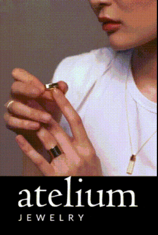
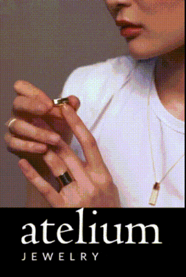
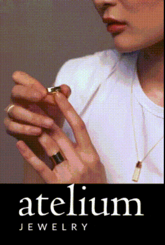

.gif)

 



.gif)


.gif)
.gif)
With more than a
decade of experience in graphic design and motion graphics, I have produced hundreds of videos for
clients across a wide range of industries. On this page, I have curated just a handful of those projects,
including work
for a leading global guitar parts distributor (Allparts Music), a luxury jewelry brand (Atelium), a tech retail and
repair services company (Laptop Dropoff), and a global
telecommunications
B2B services provider (Onesource). Every piece highlights my commitment to clear communication, creative storytelling,
and flawless execution—whether crafting sleek branded animations or exploring bold, playful aesthetics.
The examples below are presented in GIF format. GIFs are short, looping videos that play automatically but do
not have sound. They are often used for social media, emails, and shortform video.
For longer, traditional videos please visit my Videos
page.
The selections below illustrates my versatility in adapting visual solutions to different sectors and turning
ideas into compelling, audience-focused digital experiences. They also prove my video production skills, from
concept development and storyboarding to editing, post-production, and graphic design.
